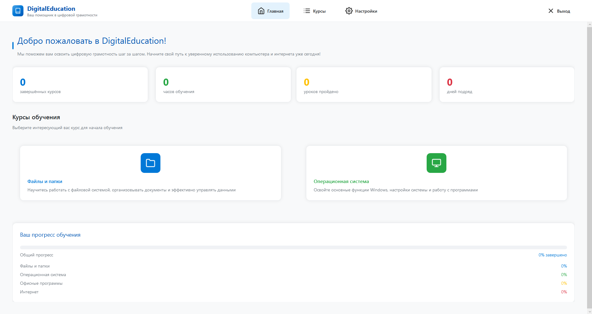
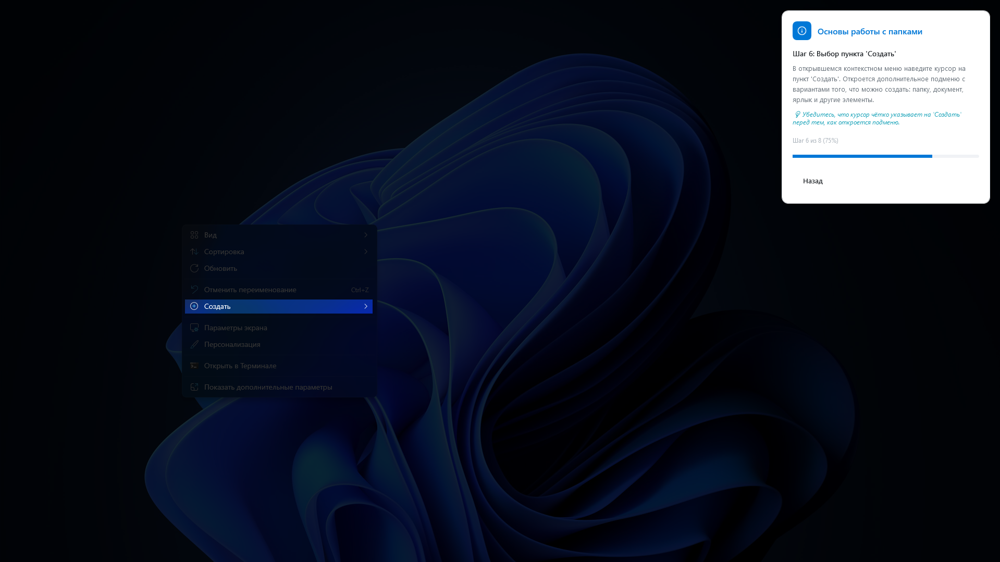
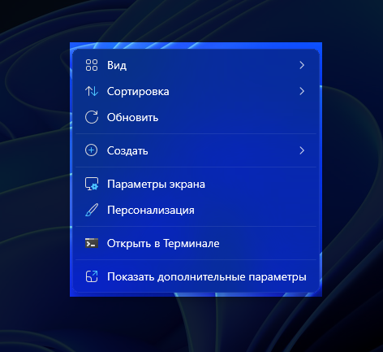
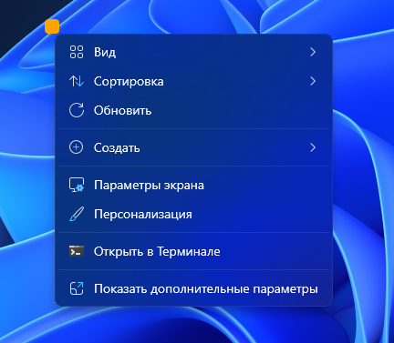
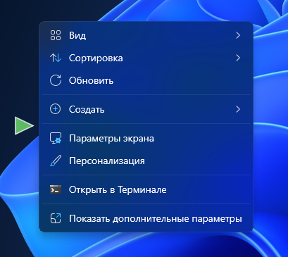
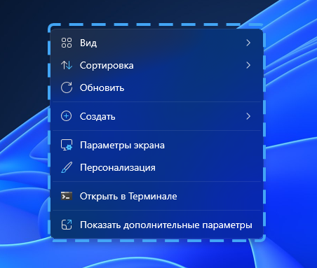

Приложение для формирования базовых цифровых компетенций
у начинающих пользователей
Студенты: Богданов Д.Р., Туктаров А.Р. | Руководитель: Кильдибаева С.Р.
2026
Низкий уровень цифровой грамотности у большинства населения.
Большинство существующих ресурсов ориентированы только на теорию
Внедрение в школы, колледжи, вузы, центры занятости.
Создание интерактивной платформы, позволяющей повысить эффективность освоения цифровой грамотности за счёт автоматической валидации практических действий в реальной среде Windows
Освоение ПК, файловой системы, Windows
Создание курсов, отслеживание прогресса обучения
Адаптивные подсказки, низкий порог входа
Повышение ИТ-компетенций
Электронный учебник, курсы для пенсионеров. Формат: текст + видео. ❌ Нет проверки реальных действий.
Видеоуроки и методички для школьников. Формат: видео + тесты. ❌ Нет интерактивной проверки в ОС.
Курсы по цифровой грамотности с видео и тестами. ❌ Не анализируют реальные действия пользователя.
🔁 Цикл повторяется на каждом шаге урока до его завершения



Затемнение

Угол

Стрелка

Рамка
Платформа для публикации, просмотра и обмена готовыми уроками между пользователями.
Нейросетевое распознавание элементов интерфейса для повышения точности и устойчивости.
Кроссплатформенный доступ через браузер.
DigitalEducation – эффективный инструмент для практического обучения цифровой грамотности, не имеющий явных аналогов в РФ.
Автоматическая валидация действий
Конструктор уроков
4 типа визуальных подсказок